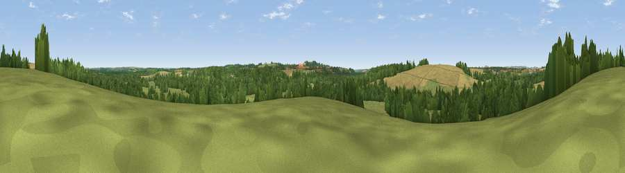

Viewpoint near Wherwell
#37448 in England · top 70% of its area beats it · near WherwellWhere it is
The exact computed spot (SU 38025 40225). Click the marker for map links.
The view, rendered

A 360° render of this exact spot computed from the terrain model, tree cover and land cover — summer colours, afternoon light, calibrated against photographs of famous viewpoints. Real trees, hedges and buildings will differ in detail.
The panorama
Grey silhouette: terrain skyline in each direction (720 bearings, Earth curvature and refraction included). Dashed green: skyline with trees (+15 m) and buildings (+8 m) as obstacles. Blue strip: how far the ground is visible on each bearing.
Where the view opens
Wedge length = distance to the farthest visible ground on that bearing (vegetation-aware). Rings at 10, 25 and 50 km.
What fills the view
40% grassland · 32% woodland · 27% cropland ·
Angular shares of the visible panorama (visual magnitude), not map area. Landscape diversity 0.49 (0–1 Shannon).
Key numbers
More beautiful places nearby
The staircase of upgrades: each row has a higher view potential than everything closer. Driving times are estimates from straight-line distance, calibrated against real road routing — check an actual route before setting out.
| Place | Direction | Drive | Score |
|---|---|---|---|
| Red Hill | N · 1 km | ~2 min | 37.3 |
| Viewpoint near Stockbridge | S · 5 km | ~10 min | 63.3 |
| Viewpoint near Stockbridge | S · 5 km | ~11 min | 64.3 |
| Viewpoint near Sparsholt | S · 11 km | ~22 min | 66.9 |
| Viewpoint near Old Burghclere | NNE · 18 km | ~31 min | 67.5 |
| Viewpoint near Bulford | W · 19 km | ~32 min | 70.3 |
| Beacon Hill | NNE · 19 km | ~32 min | 76.7 |
| Martinsell viewpoint | NW · 31 km | ~48 min | 77.3 |
51.16002, -1.45762 · source: screening · position refined by local search. Computed location — check access rights before visiting.